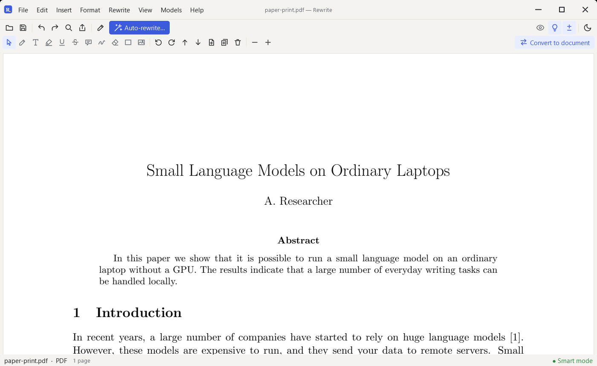

A free Acrobat
alternative for PDFs
Mark up, fix a line, and rearrange pages. Free, no account.
Download Rewrite
Free, no account

What you get
- Highlight, underline, strike out and draw
- Notes, text boxes and pictures
- Change a line of text in place, or white it out
- Turn, move, delete or insert pages
- Merge PDFs
- Turn a PDF into an editable document
What it doesn't do
- Digital signatures
- Fillable forms
- Text recognition for scanned pages
- Redaction tools
FAQ
Can I edit any text in a PDF?
One line at a time, in place. For bigger edits, convert it to a document.
Is it free?
Yes. No trial, no watermark, no account.
Are my files uploaded?
No. They stay on your computer.
Also an alternative to QuillBot Grammarly Overleaf Microsoft Word.